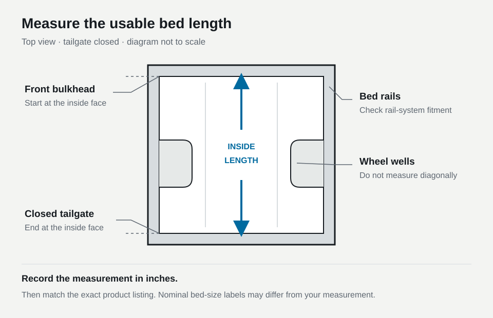

How to Measure Your Truck Bed for a Tonneau Cover
Measure your truck bed, understand inches and bed-size labels, and check vehicle details and accessories before ordering a tonneau cover.
Measure from the inside of the bed's front wall to the inside of the closed tailgate, keeping the tape straight. Write down the length in inches. Then use that reading, your truck's vehicle details, and its bed equipment to check the cover's fitment, meaning the exact truck configurations it fits.
Measure between the two inside faces
Use a tape measure long enough to span the bed and a phone or notepad to save the reading.
- Park on level ground and clear a path for the tape. Close the tailgate fully.
- Find the bulkhead, the bed's front wall immediately behind the cab. Place the tape's zero point against its inside face. The cab itself is outside the measurement.
- Run the tape lengthwise alongside one side of the bed. Keep it straight and level between the bulkhead and the tailgate, without bending it around equipment or stretching it diagonally.
- Read the tape where it meets the inside face of the closed tailgate. Exclude the tailgate's thickness and the bumper.
- Repeat the measurement and record the inches, including any fraction you can read clearly. Keep that original number when shopping.

These endpoints follow etrailer's illustrated measuring guide. WEATHER GUARD's truck-box measuring instructions use the same inside faces for bed length. If you cannot reach both ends, have someone help hold the tape in place.
Some guides start with the tailgate lowered. For the method here, keep it closed so the rear endpoint is visible; measuring to the far edge of a lowered tailgate adds space outside the bed. If a cover manufacturer requests measurements at a particular height or between its mounting points, record those separately and label where you measured.
Read inches, feet, and bed-size labels correctly
Keep these units and labels separate:
| What you see | What it means |
|---|---|
| Inches, written as in. or ″ | The unit to use for your tape reading. |
| Decimal feet, such as 5.7 ft | Seven-tenths of a foot after the five whole feet. |
| Feet and inches, such as 5′7″ | Five feet plus seven inches. This differs from 5.7 ft. |
| A nominal bed size | The size name used for a truck's bed option. It may be rounded. |
To convert inches to decimal feet, divide by 12. For a hypothetical 67-inch measurement: 67 ÷ 12 = about 5.58 feet, also written as 5 feet 7 inches. This is a unit-conversion example, not a measurement of a particular truck.
Factory labels can differ from exact dimensions. Ford's preliminary 2024 F-150 specifications list a 5.5-foot Styleside bed with an inside length at the floor of 67.1 inches. That historical naming example explains why a correct reading need not equal the bed label converted to inches. It does not establish fitment for another truck or cover.
Save both your measurement and the factory bed-size name. Look up that name in the specifications for your model year and configuration; “short bed” alone is too vague.
Check the truck and the mounting space
Match the cover's selected option to your year, make, model, cab style, bed size, and any body-generation distinction. Read the detailed fitment section and exclusions as well as the title.
Length cannot tell you whether a cover accommodates bed storage or a different tailgate. For example, the default Hard Tri-Fold option on this OEDRO Ram cover listing distinguishes Classic from New Body applications and excludes RamBox and split tailgates. Check the fitment details for the option you select; the page also lists another style.
Check the bed rails, the upper edges running along the sides. Note any factory cargo tracks, liner, rail caps, toolbox, or rack. A drop-in liner can cover mounting points; tracks or accessories can affect mounting hardware and space. Sawtooth's measuring guide discusses these installation checks. Photograph what is installed and compare it with the selected cover's instructions. Measure with the liner in place and identify it in your notes.
When the numbers or fitment details disagree
- If your tape reading seems wrong, repeat the measurement. Check the endpoints, alignment, and units. Compare with the factory specification for your configuration, including where it measures. If the difference remains unexplained, send the seller your reading and endpoint photos. Do not choose whichever size sounds closest.
- If the title and fitment details disagree, save the product link, selected option, and screenshots of the conflicting text. Ask the seller to confirm the exact part for your vehicle before ordering.
- To keep a rack, toolbox, or cargo tracks installed, ask whether that combination is supported, which mounting kit it needs, and whether anything must be removed. Two accessories fitting the truck individually does not confirm they work together.
Copy this fitment inquiry
Please confirm which cover and selected option fit this setup:
Truck: [year, make, model, cab style, body version]
Factory bed-size name: [size, or unknown]
Measured length: [inches], from the inside bulkhead to the inside of the closed tailgate
Tailgate type and bed storage boxes: [details or none]
Liner, rail caps, cargo tracks, rack, or toolbox: [types/brands; what I will keep installed]
Cover link and selected option: [link and option]
Unresolved issue: [measurement mismatch, conflicting fitment text, or accessory question]I've attached photos of both measurement endpoints and the bed rails/accessories. Does this exact cover fit with this equipment installed, and does it require any additional hardware or removal of equipment?